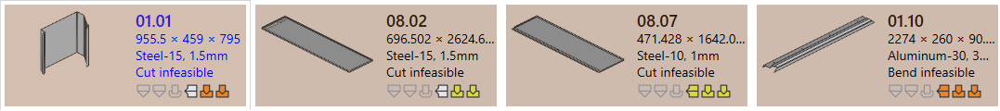
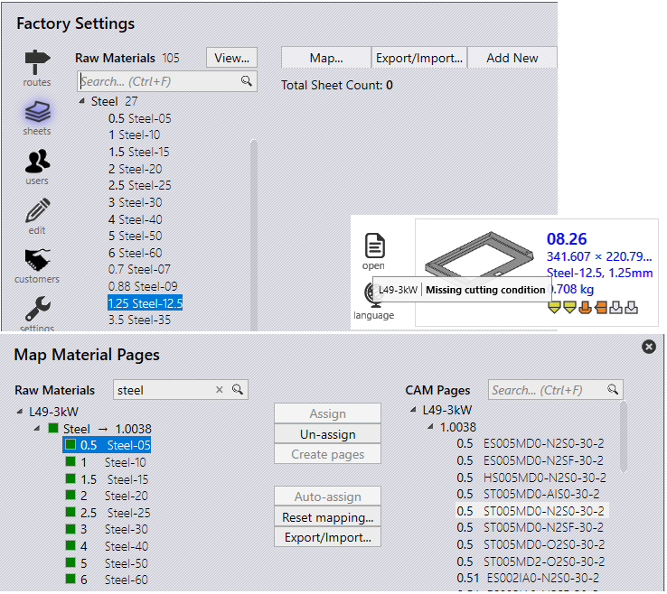
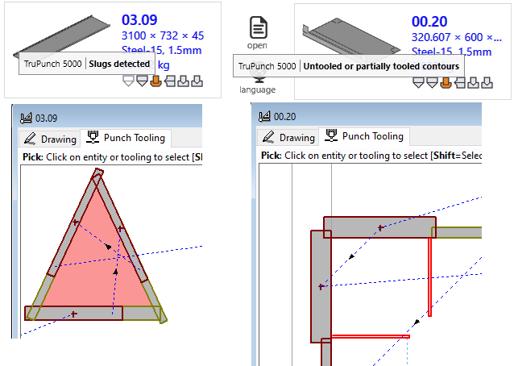

Alkatratész validálása
CAD hiba
Nem kivitelezhető (hajlítás és vágás)
-
A JFY Plus „Hajlítás nem kivitelezhető” állapotot rendeli az alkatrészhez, ha az automatikus felszerszámozás során nem talál érvényes hajlítási programot .
-
Ha a Hajlítási program [08.07] figyelmeztetést jelez, amelyet a rendszer figyelmen kívül hagy, akkor automatikusan a Vágóprogram kerül alkalmazásra.
-
Ha nem található kivitelezhető vágóprogram, akkor az alkatrész „Vágás nem kivitelezhető” állapotba kerül.
 === Anyaghiba - Hiányzó anyag: A modellből eredetileg beolvasott vastagság és hozzárendelt anyag, amelyet összehasonlítunk a JFY Plus nyersanyagával. Ha nem létezik, akkor anyaghiány-hiba kerül hozzárendelésre. - _Material not assigned : Ha a modell nem rendelkezik anyaghoz tartozó hozzárendelési mezővel, akkor a „Nincs hozzárendelt anyag” érték kerül hozzárendelésre.
 === Geometria hiba
- Open contours detected
: A CAD nyitott entitással rendelkezik.
- Multiple outer contours detected
: A CAD több zárt hurkot tartalmaz.
=== Geometria hiba
- Open contours detected
: A CAD nyitott entitással rendelkezik.
- Multiple outer contours detected
: A CAD több zárt hurkot tartalmaz.
 - Kezdeti: A táblázatból (csv vagy xlsx) betöltött alkatrészek hiányzó CAD fájljait kezdeti alkatrész hibaként hozza létre a rendszer.
- Geometry missing
: A CAD-nek nincs érvényes geometriája vagy nem érhető el.
- Kezdeti: A táblázatból (csv vagy xlsx) betöltött alkatrészek hiányzó CAD fájljait kezdeti alkatrész hibaként hozza létre a rendszer.
- Geometry missing
: A CAD-nek nincs érvényes geometriája vagy nem érhető el.
 == CAM hiba
=== Hajlítószerszám-hiba
== CAM hiba
=== Hajlítószerszám-hiba
Az alábbiakban a hajlítószerszámok hibáit ismertetjük.
-
Collisions detected és Gripper error.
 - Szerszám Overload error
és furat a hajlítási vonal közelében.
- Szerszám Overload error
és furat a hajlítási vonal közelében.
 - Needs review
és rövid matrica/stancolási rés.
- Needs review
és rövid matrica/stancolási rés.
 - Tool missing
, Poor backguage
, Alkatrész túl nagy ehhez a géphez.
- Tool missing
, Poor backguage
, Alkatrész túl nagy ehhez a géphez.

Az alábbiakban a vágószerszámok hibáit ismertetjük.
-
Hiányzó vágási feltétel nincs hozzárendelve a nyersanyaghoz.
 - Lyukasztási hulladék hiba: A stancolószerszámoknál a belső hurok illesztések nélkül van megmunkálva. - Untooled or partially tooled contours : Hiányzó stancolószerszámmal megmunkált szegmensek.
